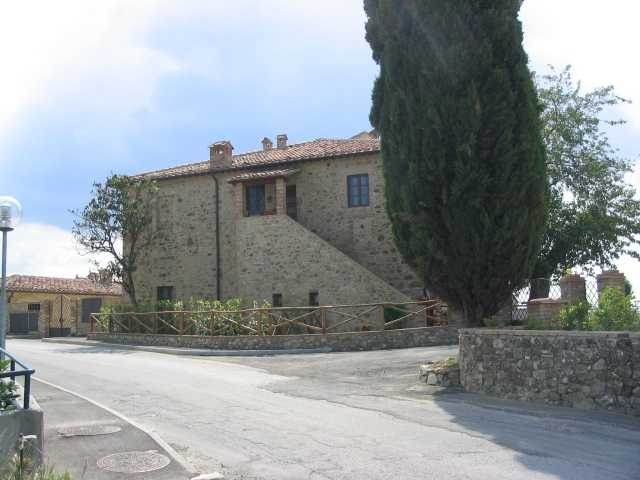
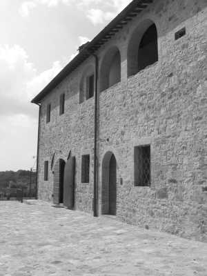
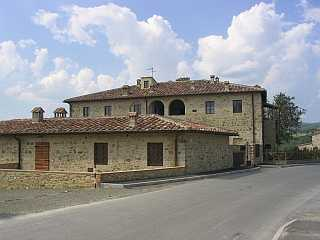
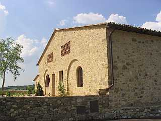

Incamminandosi sulla strada di Petroio, da poco asfaltata, partendo dalla Chiesa di Quercegrossa, lasciato il Casino sulla destra si intravedono dopo pochi passi, a qualche centinaia di metri, le logge dell’Olmicino, podere della proprietà Pallini della fattoria di Petroio. Già qualche secolo prima, nel Seicento, era stato possesso di quella fattoria sotto Asdrubale Credi che l’aveva acquistato forse a fine Cinquecento da Faustina Tani erede di Girolamo. Sulla nascita di questo podere non rimangono notizie ma c’è da pensare che la sua storia abbia origine nel Tardo Medioevo, sorto su quegli sparsi appezzamenti di terra di proprietà cittadina riuniti intorno all’abitazione del mezzadro. Nel 1319 un certo Pietro di Guido possiede delle proprietà a Quercegrossa poste al Poggio degli Olmi ed altra sul Poggio della Staggia. Inserito nella comunità di Quercegrossa e nell’antica parrocchia di Petroio prima di passare a Quercegrossa, il podere Olmicino accoglieva a metà Seicento un mezzadro e un pigionale e questa destinazione perdurerà fino agli inizi del Novecento allorquando lavori di ristrutturazione consentirono di ospitare una seconda famiglia colonica. Al nuovo podere venne imposto dalla proprietaria Fontana Antonelli Maria il nome di S. Elena e una nota nel censimento del 1911 ce lo presenta come
"Podere S. Elena, Olmicino, senza numero, nuova costruzione".

Strutturato su due piani con due ingressi separati per l’abitazioni dei contadini, di cui uno a scala esterna nella parte Nord-Est avendo di fronte, a pochi metri, l’aia e la capanna, l’altro dalla corte con scala interna nella parte Sud dove si affacciano i castri e gli ingressi ai vari ambienti. I dati catastali del 1825 danno una Casa colonica e aia di 1178 bq. (400 mq.), Capanna e aia di 864 bq.
La storia dei proprietari si sviluppa dai già citati Tani e quindi col Credi, padrone dal 1610 circa, con Andrea e poi Asdrubale che lo rivende ai Tantucci e dopo di loro i Barbucci. Nel 1644 abbiamo la causa per la proprietà del podere; non sappiamo come si risolse, ma nel 1650 è proprietario un certo Carpi di Siena e poco dopo ritorna al Credi che lo sarà fino al 1692 quando vende a Francesco Maria Mazzei. Incerta a questo punto la sequenza e la cronologia; sappiamo solo che nel 1712 è definito Olmicino Fortini e nel 1771 Olmicino Faleri.
Questa famiglia che possiede anche le Gallozzole mantiene la proprietà dei due poderi fino al 1841 per poi venderli agli Andreucci che già posseggono a Quercegrossa. Dopo 65 anni nei quali il podere segue la successione familiare degli Andreucci, come la Villa di Quercegrossa, il 7 luglio 1905 vendono a Enrico Fontana Antonelli sia l’Olmicino che il Casino. Da qui in avanti la proprietà segue quella del Casino al quale vi rimando.
La suddivisione delle terre creò due poderi molto diversi: uno di grande dimensione, circa tredici ettari, tutti coltivati, con le terre al di là della strada comunale con prevalenza di pianura aventi come confine la strada della catena, i campi di Viareggio e del Casino a Sud, ed era quello dei Nocciarelli; l’altro, di otto ettari circa, con le terre che dalla strada comunale degradavano fino al borro della Staggia, ed era quello dei Palazzi,
"Podere in pendenza". I Nocciarelli insaccavano 180 ql. di grano, quasi tutto venduto, e producevano 3 ql. di olio e 150 barili di vino (ca. 6000 litri). Nella stalla dalle dodici alle quindici bestie con due/tre paia di vacche, il resto vitelli. Nel castro due scrofe Cinte. Tribbiavano con i Mori e possedevano tre carri dei quali due fatti dal Pante di Ricceri e uno portato da Fagnano. I Palazzi raccoglievano 55 ql. di grano, 2 ql. di olio e circa 150 barili di vino. Nella piccola stalla un paio di bovi e qualche vitellone.

Usavano due carri di cui uno per ramare.
"Il pozzo d’estate si puliva; Enrico si legava col canapo. Con le bestie e la botte al Bozzone o al Ponte a Serpe o a Gaggiola al fontino. Dal pozzo attingevano tutti e due i poderi mentre d’estate alle sorgenti di Val di Lama o al Dorcio. Le fonti per lavare ai tomboletti del borro, d’estate alla fonte dei noci". Tra le famiglie coloniche dell’Olmicino si ricordano ancora i Papi, partiti nel 1943, che lasciarono ai Nocciarelli. Il Novecento si era aperto col solo Fortunato Burresi risultante ancora nel 1911 ma nel 1921 figurano Viperai e Branconi, quest’ultimi partiti nel 1926 lasciando il posto ai Meli. Nel Trenta un Giuseppe Bartali che lasciò ai Palazzi. Nel 1931 vi abitano Papi e Palazzi. Ritornando poi agli antichi coloni troviamo abitarvi nel 1592 Lorenzo di Pavolo che dichiara di aver raccolto moggia 7 di grano (35 ql.) e Gosto Valigiardi nel 1611. Quindi Giovanni Gai tre anni dopo e Giovanni Chiavistrelli nel 1617. Nel 1672 nella pigione abita Salvatore Fontani in quattro persone e nel podere sono tredici i familiari di Marco Sancasciani. Nel Settecento abbiamo una decina di famiglie che si danno il cambio all’Olmicino: Masini, Manganelli Franciagli, Favilli, Burroni, Anichini per chiudere con i Buti e i Barbucci che vi dimorano fino al 1810. Il nuovo secolo è coperto quasi per intero dai Tracchini e si chiude con i Fanti, i Focardi (1880-1899) e il già citato Burresi.

Alcune vedute del podere Olmicino. La prima da est con la scala esterna che portava in casa del colono; seguono due vedute da sud con l'altro ingresso e i sevizi; ultima la capanna.
Capitolo successivo Paradiso
Inizio pagina
Vai all'Indice dei Capitoli